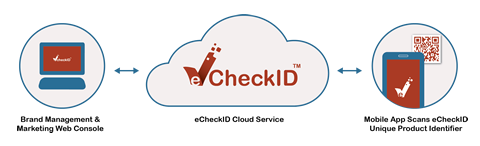

易知网移动产品信息平台通过提供实时的认证，有效期、过敏和召回状态信息，能让消费者放心的享用食物与健康相关的的消费品。 消费者只需要对产品包装上的易知网二维码进行简易的扫描，便能立刻得到她们购买的产品的真伪和安全信息。 消费者不必在品牌官网上输入复杂的验证码去确定真伪，也不用通过检查全息防伪标示或防伪图案去推测产品的真伪。
不同于普通通用产品代码或其他市场导向的二维码，经过加密的易知网产品个别识别码使产品的识别信息极难被伪造。一旦扫描，如产品召回等重要实时信息，将立刻被推送到消费者的移动终端。 若食品中含有诸如乳糖、坚果、麸质和贝类等过敏原的话，对這些过敏症原有不良反应的消费者便能得到实时警示。
额外的产品文字、视频或语音信息，譬如食谱、使用指南或来自其他消费者或专家的评论都能被直接推送到消费者的移动终端上。这也增强了消费者对产品功效的满意度。
由于复杂及多层次的进出口、批发、零售和电子商务环节，品牌厂商难以直接和每个消费者直接一对一沟通。以消费品而言，品牌厂商現在是无法辨别消费者的身份和消费地点的。 假如是大流量的包装消费品如化妆品或保健品等，销售点条形码的扫描数据是极之局限而无法帮助品牌厂商与消费者建立联系的。 通过使用易知网移动应用，消费者能够便捷的注册他们的产品使用和所有权。消费者要做的仅仅是扫描易知网二维码和按下注册按钮。
通过易知网移动应用进行注册，消费者能够自动登记他们购买的个别产品的单元， 和他们购买或使用這产品单元的时间及地点。 品牌厂商能调整他们传递给消费者的信息、推荐互补产品及提供使用信息，最重要的是能够实时发送与消费者和产品相关的重要安全信息，提升消费者对品牌的信赖。 对于如奶粉之类的周期性消费品，品牌厂商能在消费者用完手上存貨之前补充同一产品， 以便消费者继续消费。 消费者能直接通过移动应用将对产品的反馈直接发送给品牌厂商，且不用查阅产品包装上的产品编号和拨打服务电话。
社交网络在消费者对产品功效和质量的评价有着重要的作用。易知网移动应用整合了国内外主要的博客和社交网络，例如微博，人人，脸谱和Twitter等。 消费者能够通过这些主要社交网络和他们的朋友以及品牌厂家联络。如果他们对产品有好的体验，他们能够容易地发布相关的微博或在社交网络上点赞及分享。 消费者也能与朋友分享他们对产品的意見，这同时也能提升产品的知名度和需求。易知网应用能使消费者帮助一个产品或品牌成为关注的话题。 作为回应，品牌厂商可以通过易知网应用奖励消费者来鼓励积极的社交网络活动，例如消费者在社交网络上对产品点赞等。
除了能基于消费者购买的产品单元而直接推送产品安全信息以外，品牌厂商也能够向目标消费者的移动终端推送营销或促销信息。 虽然一个品牌有很多途径与消费者沟通，从传统的离线方式如平面广告和投递邮件，到在线的方式如网页横幅或搜索引擎广告。 然而这些途径大多数仅仅是广泛的传播营销信息给某一群体，而不能根据市場资料或消费特点向真正会使用该品牌产品的目标消费者投放。 此外，不同于移动终端，通过传统媒体和互联网传递的营销的信息不能随时推送到消费者手里。因此这些营销信息很少能达到其理想的目标。
通过易知网传递的信息会直接送达消费者随身携带的移动终端中。营销信息能够准确的传递给使用某产品或互补产品的真实消费者。 易知网能够在合适的地点，合适的时间，给目标消费者传递信息, 使营销人员梦想成真。
消费者不仅乐于获知更多他们使用的产品的信息，他们也对能降低他们关注的产品的价格之促销活动特感兴趣，这些活动也能帮助他们建立与品牌的亲密度。 品牌厂商也可以使用易知网平台來提供品牌忠诚积分活动，让消费者赢取基于购买产品数量的奖励、回扣或折扣。消费者可使用易知网移动应用简单地扫描易知网二维码来自动获得积分。 她们再不需要使用繁锁的邮寄或在网站上注册等方式來赢取积分。品牌厂商也能够通过消费者扫描易知网二维码刮出的密码来进行抽奖活动。